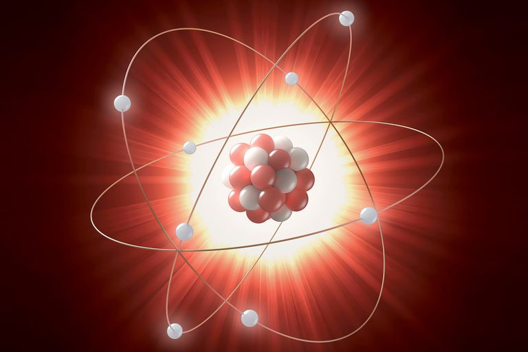

The Proton "He was in the beginning with God"
The Universe wanted to experience itself subjectively, so it conjured up a subatomic particle that we named the "Proton".
This Proton was the Father of the King, the first thought ever conjured up by Oneness.
The Neutron "All things were made through Him, and without Him nothing was made that was made"
Another seed was introduced which was the seed or Son of the Father. We have named this particle the "Neutron".
Now the Son was one with the Father Proton. This was the beginning of thinking.
The Electron "In Him was life, and the life was the light of men"
The notion of thinking took the form of motion, vibrations and energy.
Without this motion and energy, the proton and neutron would lay dormant,
nothing more than thought without purpose.
The Spirit that surrounds the electron has a negative charge and is a particle we have named the "Electron"

The electron gave purpose and completed the 'Trinity of the Atom'
Consciousness is born!

Our Universe is Awake!
Thus, consciousness was born through motion to experience itself subjectively.
We can experience this ancient perception of Oneness in our daily lives...